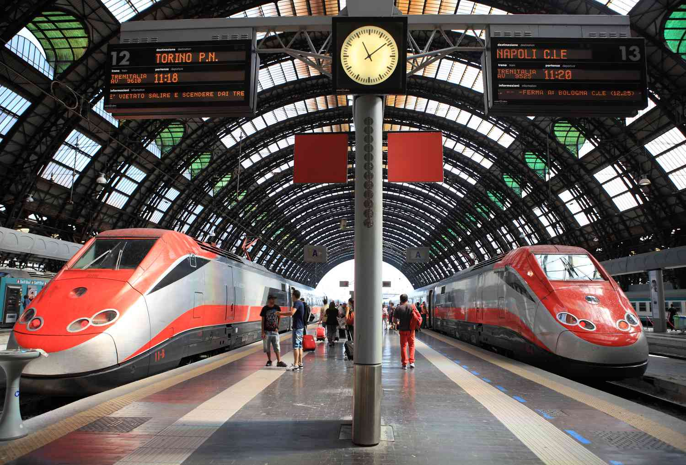

Explore Italy: A Land of History, Art, and Culinary Delights
Italy, located in Southern Europe, is a country renowned for its rich history, world-class art, and vibrant culture. Known as the birthplace of the Roman Empire and the Renaissance, Italy offers a unique blend of ancient ruins, stunning architecture, and modern lifestyle. From the romantic canals of Venice to the historic streets of Rome, and the scenic landscapes of Tuscany to the Amalfi Coast, Italy captivates travelers with its beauty, culinary delights, and cultural heritage.
Italy is also famous for its world-renowned cuisine, from handmade pasta and fresh seafood to exquisite wines and cheeses. Each region has its own unique traditions, festivals, and artistic heritage, making every visit a new cultural experience.
Culture and Traditions
Italy has a rich and diverse culture shaped by thousands of years of history. It is famous for its art, music, and architecture, from the Renaissance masterpieces in Florence to the historic ruins of Rome. Festivals, traditional ceremonies, and local crafts are an important part of daily life, reflecting the country’s strong sense of heritage.
Italian cuisine is a key part of the culture, with each region offering its own specialties, such as pasta, pizza, wine, and cheeses. Family, community, and social gatherings are highly valued, and meals are often shared with friends and loved ones, making food not just nourishment, but a cultural experience.
Places to Visit
Italy offers an incredible mix of history, art, and culture, with cities like Rome, Florence, and Venice standing out as must-visit destinations. Rome is famous for ancient landmarks such as the Colosseum and the Roman Forum. Venice, with its canals and gondolas, provides a romantic and unique experience unlike any other city in the world.
Beyond the cities, Italy’s landscapes are just as impressive. The Amalfi Coast is known for its dramatic cliffs, colorful villages, and stunning sea views, making it perfect for relaxation and photography. In the north, the Italian Lakes such as Lake Como offer peaceful scenery and elegant towns, vineyards, and small medieval villages showcase the country’s charming countryside.
Famous Places to Eat and Dine
Italy is famous for its delicious food and great places to eat. In Rome, you can enjoy traditional pasta dishes at cozy restaurants, while Florence is known for its tasty Florentine steak. Venice offers fresh seafood in small local eateries along the canals.
In Naples, you must try authentic pizza at historic pizzerias, and in Bologna, local restaurants serve rich pasta dishes like tagliatelle with meat sauce. Everywhere in Italy, you can also enjoy fresh gelato, cheeses, and wines, making dining a special part of the trip.
Transportation

Italy has a well-connected transportation system that makes traveling around the country easy. Major cities like Rome, Milan, and Florence have extensive bus and metro networks, making it simple to get around within the city. Taxis and ride-sharing services are also widely available for convenience.
For traveling between cities, Italy has an efficient train system, including high-speed trains like the Frecciarossa that connect major destinations quickly.
Travel Tips
Here’s a comprehensive list of travel tips for visiting Italy to make your trip smoother, more enjoyable, and memorable:
Best time to visit: Spring (Apr–Jun) and Fall (Sep–Oct)
Language: Learn basic Italian phrases (Ciao, Grazie, Per favore)
Walking: Historic centers are mostly pedestrian-only; wear comfortable shoes
Tickets: Book attractions (Colosseum, Uffizi, Vatican) in advance
Safety: Watch for pickpockets in crowded areas
Famous Songs in Italy
Italian songs are famous for their emotional melodies and expressive lyrics. Here are some of the Italian songs that are popular.
THE BEST OF GLOBETREK DELIVERED TO YOUR INBOX
Sign up for inspiring travel stories, guides, and cultural insights.